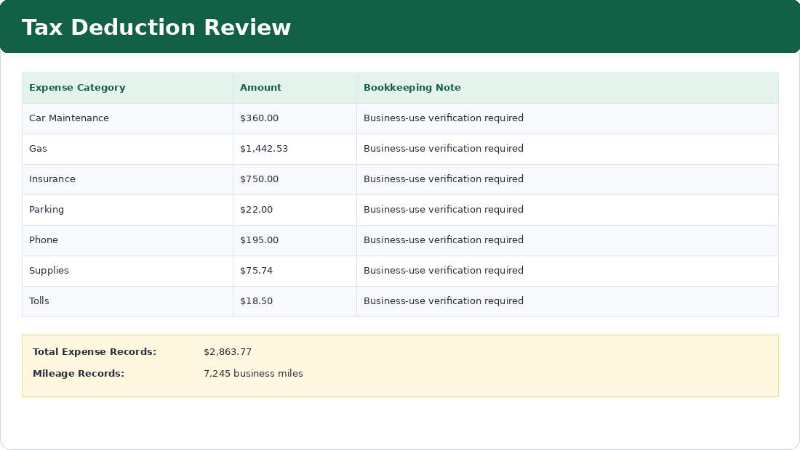

Purpose
Organize deductible business expense categories and mileage records for tax-support documentation.
Simple Example
Gas, phone, car maintenance, tolls, parking, insurance, and supplies are grouped for review.
Simple Bookkeeping Decision Rule
Bookkeeping records should organize potential deductions clearly, but tax decisions should be confirmed with a tax professional.

Analysis
The deduction review groups $2,863.77 in business expenses by category for January–March 2025, including $1,442.53 in gas expenses and 7,245 business miles. Each category includes a verification note and supporting document source to show how electronic receipts, invoices, statements, dashboard photos, and delivery app records support tax preparation review.
Result
Potential deductible categories are organized, making tax-time review easier and more accurate.